▲ 유림공원과 유성천변 전경. 사진은 2025년 축제 현장이다 사진=한국관광공사
대전 유성구가 10월 17일(토)부터 11월 1일(일)까지 16일간 제17회 유성국화축제를 연다. 장소는 유림공원 일원(어은로 27, 봉명동)이고 입장은 무료다. 함평·익산처럼 들판이나 대형 부지에서 하는 국화 축제와 달리, 이곳은 지하철역과 온천 상권, 대학가가 붙은 도심 하천변 공원이 무대다. 그래서 자차 방문객이 가장 먼저 부딪히는 문제는 꽃이 아니라 주차다. 이 글은 한국관광공사 자료와 개막 전 보도를 근거로 일정과 프로그램을 정리하고, 아직 공식 안내가 확인되지 않은 주차·셔틀 항목은 확인되지 않았다고 분명히 적었다.
1. 한눈에 보기 — 일정과 기본 정보
2026년 9월 4일자 보도와 한국관광공사 축제 정보 모두 개최 기간을 2026년 10월 17일~11월 1일로 안내한다. 개최 기간이 바뀌었거나 취소됐다는 내용은 확인되지 않았다. 올해 달라진 점은 대전의 상징물 한빛탑을 형상화한 대형 국화 조형물이 새로 들어서고, 아스타 화훼원을 어은교 하부 유성천까지 넓혔다는 것이다. 제목의 8만여 본은 국화만의 수치가 아니라 유성구가 밝힌 국화와 계절 초화류 합산 수치다. 유성구는 국화와 계절 초화류 8만여 본을 직접 재배해 전시한다고 밝혔다.
| 항목 | 내용 | 확인 근거 |
|---|---|---|
| 기간 | 10월 17일(토)~11월 1일(일), 16일간(제17회) | 관광공사·지역 보도 |
| 장소 | 대전 유성구 어은로 27(봉명동) 유림공원 일원, 유성천변 | 관광공사 |
| 입장료 | 무료(일부 체험 부스는 유료일 수 있음) | 관광공사 무료 안내, 체험 요금은 미확인 |
| 운영 시간 | 일부 안내에서 10:00~22:00, 야간 조명 18:00 이후로 소개됨 | 관광공사 연계 정보 사이트에도 10:00~22:00 표기, 유성구·축제 공식 2026 시간표는 직접 확인하지 못함(2026-10-04 기준) |
| 규모 | 국화·계절 초화류 8만여 본 | 유성구 보도 |
| 문의 | 042-611-2678 | 관광공사 안내 |
| 내비 목적지 | 유림공원(어은로 27) | TourAPI 주소 |
ℹ️ 같은 장소에서 열리는 유성온천문화축제와 다르다
관광공사 DB에는 "유성온천문화축제"도 같은 주소(어은로 27)로 등록돼 있다. 이 글은 가을에 열리는 유성국화축제만 다룬다. 검색 결과에서 연도와 축제명이 섞여 나오므로 "제17회"와 "10월 17일~11월 1일"을 확인한 뒤 일정을 잡자.
2. 무엇을 보나 — 한빛탑 조형물부터 야간 프로그램까지
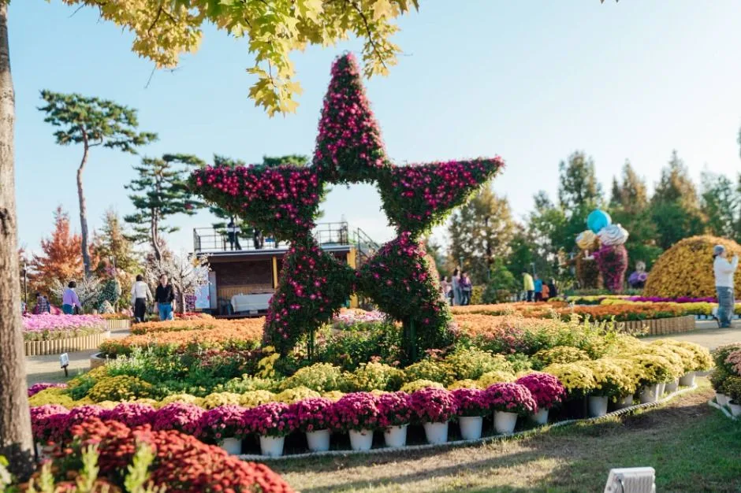
▲ 별 모양 조형물 주변을 국화 화분이 둘러싼 전시. 사진은 2025년 축제 현장이다. 사진=한국관광공사
올해 주제 조형물은 한빛탑 국화 조형물이다. 한빛탑은 대덕특구가 있는 과학도시 대전을 상징하는 건물이어서, 유성구는 "과학도시 유성"을 표현했다고 설명했다. 아스타 화훼원은 유림공원에서 어은교 하부 유성천까지 확대된다. 공원 옆 수변 코스모스길과도 이어져 국화만 보는 동선보다 걷는 거리가 길다.
낮에는 대형 조형작, 국화 분재 같은 작품 국화, 생활가드닝 체험(드로잉 캐리커처 로봇, 테라리움 등)이 있고, 지역 대학과 로컬 아티스트 공연이 열린다고 소개됐다. 밤에는 달빛 버스킹, 캔들가든 콘서트, 소망등, 국화 시네마가 예정돼 있다. 공연 날짜별 시간표는 확인하지 못했다.
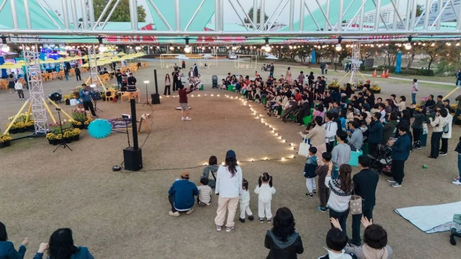
▲ 야외 공연 무대 앞 풍경. 사진은 2025년 축제 현장이며 올해 출연진과 시간표는 별도 확인이 필요하다. 사진=한국관광공사
| 시간대 | 프로그램 | 비고 |
|---|---|---|
| 상시 | 국화 조형물(한빛탑), 작품 국화, 국화 분재 전시 | 한빛탑 조형물은 올해 신규 |
| 상시 | 아스타 화훼원, 수변 코스모스길 | 화훼원을 유성천 어은교 하부까지 확대 |
| 낮 | 생활가드닝(캐리커처 로봇·테라리움 등), 목재 체험, 국화 체험 | 체험별 요금 미확인 |
| 낮~저녁 | 지역 대학·로컬 아티스트 공연 | 세부 시간표 미확인 |
| 밤 | 달빛 버스킹, 캔들가든 콘서트, 소망등, 국화 시네마 | 일정별 시간 미확인 |
공식 소개는 한국관광공사 대한민국 구석구석 축제 페이지에서 볼 수 있다. 유성국화축제 안내 바로가기
3. 자차 접근 — 내비는 어디로 찍나
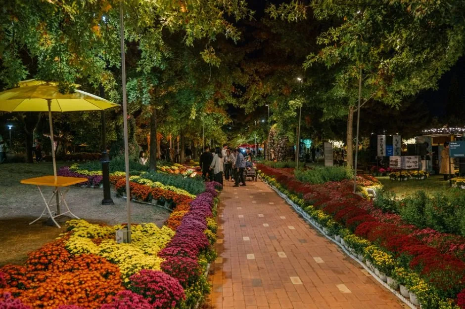
▲ 벽돌길 양옆에 국화 화단이 이어진 산책로. 사진은 2025년 축제 현장이다. 사진=한국관광공사
내비 목적지는 "유림공원" 또는 "어은로 27"이다. 다만 공원 정문 앞까지 차로 붙으면 오히려 시간이 더 걸릴 수 있다. 공원이 유성온천 상권과 대학로 사이에 있어 주말 오후에는 진입이 쉽지 않을 수 있다는 안내가 여러 곳에 보인다. 경부고속도로·호남고속도로 어느 방향에서 오든 마지막 구간은 유성 도심의 일반도로이고, 나들목별 최적 경로와 소요 시간은 공식 자료에서 확인하지 못했다. 출발 직전 내비의 실시간 교통정보를 기준으로 삼자.
| 항목 | 내용 | 확인 상태 |
|---|---|---|
| 내비 목적지 | 유림공원(대전 유성구 어은로 27) | 관광공사 주소 |
| 고속도로 접근 | 경부·호남 방면 모두 유성 도심 일반도로로 진입 | 나들목별 경로 미확인 |
| 대전 도심에서 | 내비 실시간 경로 확인 | 공식 안내 없음 |
| 공원 내 주차 | 공원 내 주차장은 협소해 추천하지 않는다는 안내 | 수용 대수 미확인 |
| 대중교통 대안 | 1호선 유성온천역에서 도보 약 15분(매체 안내) | 공식 확인 필요 |
4. 주차장·임시주차·셔틀 — 확인된 것과 아닌 것
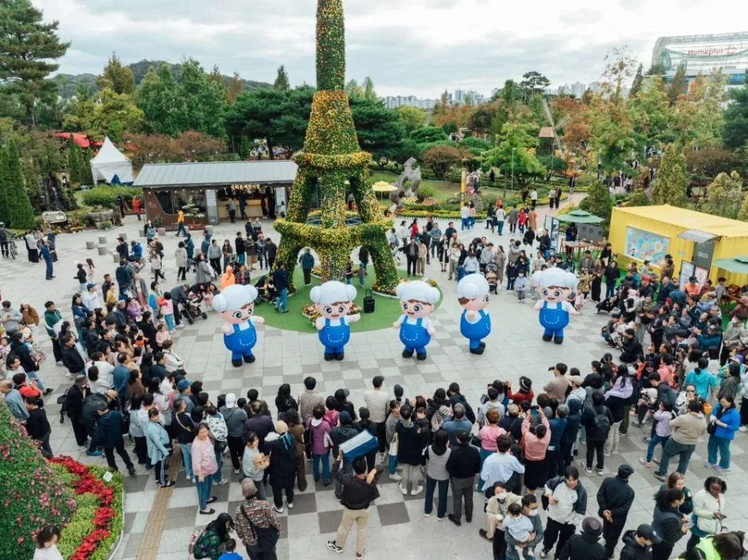
▲ 마스코트 공연에 사람이 모인 광장. 사진은 2025년 축제 현장으로, 인파가 몰리는 주말에는 공원 진입 자체가 어려울 수 있다. 사진=한국관광공사
가장 중요한 부분이지만 2026년 공식 주차·셔틀 안내는 확인하지 못했다. 2026년 임시주차장과 셔틀 운영에 대한 공식 발표는 확인하지 못했다. 지난해(2025년) 안내에는 유림공원 부설 주차장이 협소해 유성구청 주차장, 키스티·카이스트 임시주차장, 온천동로 노상주차장 등을 권했고, 주말 저녁에는 유성구청 주차장을 무료 개방했다는 내용이 있다. 올해도 같은 방식이 적용된다고 단정할 수는 없다. 아래 표는 "지난해 안내"와 "올해 확인 여부"를 나눠 적었다.
| 항목 | 2025년 안내 | 2026년 |
|---|---|---|
| 공원 부설 주차장 | 협소, 혼잡 시 조기 마감될 수 있음 | 확인하지 못함 |
| 유성구청 주차장 | 임시 이용 안내, 주말 저녁 무료 개방 | 확인하지 못함 |
| 키스티·카이스트 임시주차장 | 임시주차장으로 소개 | 확인하지 못함 |
| 온천동로 노상주차장 | 임시주차장으로 소개 | 확인하지 못함 |
| 주차 요금·수용 대수 | 자료 없음 | 확인하지 못함 |
| 셔틀 | 갑천역 셔틀 등이 소개됐으나 공식 자료로는 확인하지 못함 | 공식 발표 확인하지 못함 |
| 문의 | 042-611-2678 | 방문 전 전화 확인 |
※ 2025년 임시주차장 4곳(유성구청·키스티·카이스트·온천동로 노상)과 주말 저녁 구청 주차장 무료 개방, 갑천역 셔틀은 지역 여행 매체 안내(원출처 미확인)이며 유성구청 공식 공지로 확인하지 못했다. 확인한 매체 검색 결과에서는 유성구청 주차장의 주말·공휴일 무료 개방만 확인됐고 갑천역 셔틀은 확인되지 않았다.
✅ 자차 방문 요령
· 주차 장소를 공원 앞으로 정하지 말고, 대학·구청 등 임시주차장 후보를 2~3곳 미리 정해 둔다(개방 여부는 개막 직전 확인)
· 임시주차장은 카이스트·키스티처럼 기관 시설일 수 있어 출입 규칙이 다를 수 있다. 현장 안내를 따르자
· 셔틀 정보는 출발 전날 유성구청 공지와 축제 문의번호(042-611-2678)로 확인한다
· 정체가 걱정되면 외곽에 주차한 뒤 걷거나 유성온천역을 활용하는 방법도 있다
5. 언제 가야 덜 붐비나 — 주말 혼잡과 시간대
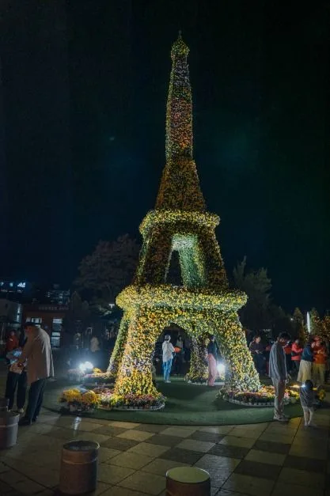
▲ 야간 조명을 받은 조형물. 사진은 2025년 축제 현장이다. 사진=한국관광공사
혼잡 시간대에 대한 공식 통계는 없다. 다만 여러 안내가 "주말 오후에는 공원 가까이 진입하는 것부터 쉽지 않을 수 있다"고 적어 평일 방문을 권한다. 개막 첫 주말은 10월 17~18일이고, 마지막 주말은 10월 31일~11월 1일이다. 야간 프로그램은 저녁에 몰려 있으므로 낮에 보고 일찍 떠나는 쪽과 저녁 조명과 공연을 보는 쪽 중 어느 쪽이 목적인지 정한 뒤 주차 계획을 세우자.
우천 시 프로그램 운영 변경 여부는 확인하지 못했다. 야외 하천변 공원이므로 공연은 날씨 영향을 받을 수 있다고 보는 것이 합리적이지만(추정), 구체적 기준은 공지되지 않았다. 우산과 방한 겉옷을 챙기고, 야간 관람이 목적이라면 출발 전 축제 문의번호로 당일 운영 여부를 묻자.
| 시점 | 특징 | 자차 판단 |
|---|---|---|
| 평일 낮 | 혼잡 부담이 상대적으로 적다는 안내 | 가장 무난 |
| 주말 낮~오후 | 진입 자체가 어려울 수 있다는 안내 | 임시주차장 후보 필수 |
| 주말 저녁 | 야간 조명·공연 시간대, 구청 주차장 무료 개방 사례(2025) | 주차 경쟁 가능성이 크다(추정) |
| 개막·폐막 주말 | 10월 17~18일, 10월 31일~11월 1일 | 인파 증가 가능성(추정, 공식 자료 없음) |
6. 연계 코스 — 유성온천·한빛탑·엑스포 (확인된 것만)
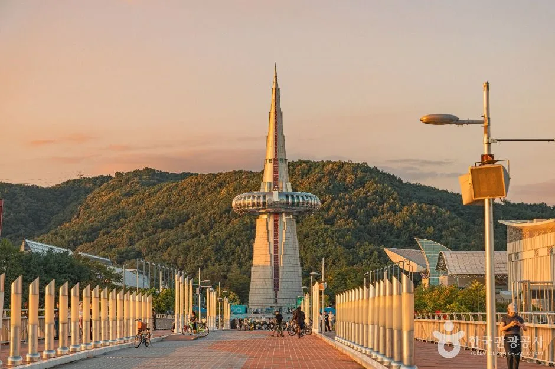
▲ 대전엑스포과학공원의 한빛탑. 올해 국화 조형물의 모델이 된 건축물이다. 사진 하단의 한국관광공사 로고는 원본에 포함된 출처 표시를 그대로 둔 것이다. 사진=한국관광공사
한국관광공사 DB 기준으로 한빛탑과 대전엑스포과학공원은 대덕대로 480(도룡동)에 있다. 축제장(어은로 27)과 이어서 갈 수 있는 거리이지만 두 곳 사이의 정확한 거리와 소요 시간은 공식 자료에서 확인하지 못했으니 내비로 확인하자. 유성온천지구와 유성온천공원(계룡로123번길 52, 봉명동)도 축제장과 같은 동네에 있다. 유성온천공원은 한국관광공사 DB에 등록돼 있고, 한 매체는 유성천 산책로와 족욕 체험장을 연계 코스로 소개했다. 2025년 축제에는 온천수 족욕 체험장이 있었으나 올해 운영 여부는 확인하지 못했다.
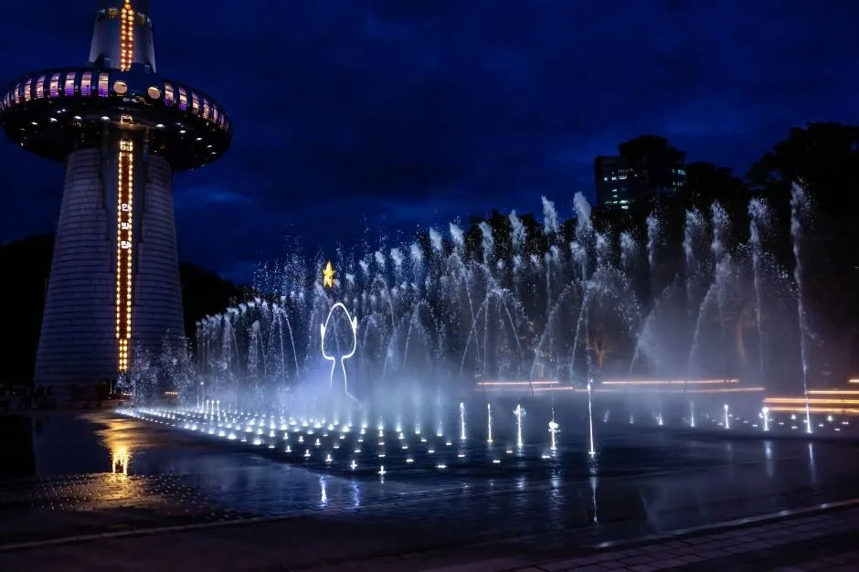
▲ 한빛탑 앞 광장의 야간 분수. 한국관광공사 DB의 엑스포과학공원 사진이다. 사진=한국관광공사
| 장소 | 주소 | 비고 |
|---|---|---|
| 유림공원(축제장) | 대전 유성구 어은로 27 | 주 행사장 |
| 유성온천공원 | 대전 유성구 계룡로123번길 52(봉명동) | 주차·운영시간 미확인 |
| 대전엑스포과학공원·한빛탑 | 대전 유성구 대덕대로 480(도룡동) | 한빛탑 조형물 모델, 개방 시간 미확인 |
축제장과 같은 봉명동의 유성 족욕체험장(관광공사 DB 등록)과 유성온천공원은 공원에서 걸어서 묶어 볼 만한 후보다. 아래 사진은 모두 한국관광공사 DB의 평소 모습이며 이번 축제 현장이 아니다. 지금은 가을이지만 사진 속 계절이 다를 수 있다.
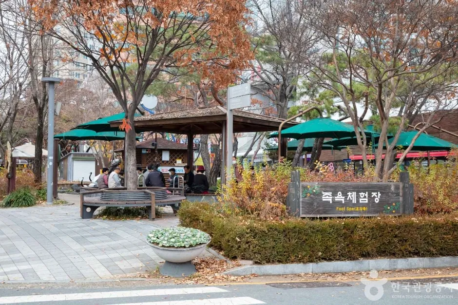
▲ 유성 족욕체험장. 한국관광공사 DB의 평소 사진이며 올해 축제 기간 운영 여부와 요금은 확인하지 못했다. 사진=한국관광공사
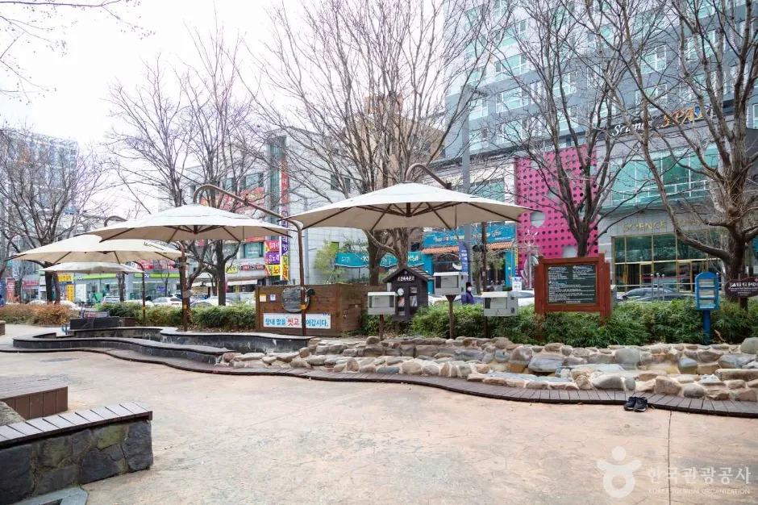
▲ 족욕체험장 옆 휴식 공간. 관광공사 DB의 평소 사진이다. 사진=한국관광공사
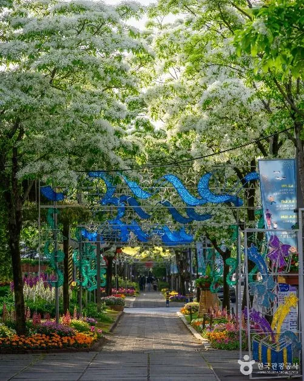
▲ 유성온천공원 산책로. 관광공사 DB 사진으로 꽃과 나무 계절은 올해 가을과 다르다. 사진=한국관광공사
| 코스 | 위치 | 자차 관점 메모 |
|---|---|---|
| 유성 족욕체험장·유성온천공원 | 축제장과 같은 봉명동 | 차를 한 번만 세우고 걸어서 이동하는 구성이 가능해 보인다(추정). 주차는 별도로 확인해야 한다 |
| 엑스포과학공원·한빛탑 | 도룡동, 유성구 | 올해 조형물의 실물 모델. 같은 날 이동하면 주차를 두 번 해결해야 한다 |
| 장태산자연휴양림 | 서구 장안로 461 | 축제장과 다른 구에 있어 별도 반나절 일정으로 잡는 편이 낫다(추정) |
같은 엑스포과학공원에서 열리는 행사의 주차 방식은 엑스포과학공원 대전 빵축제 주차 가이드에 정리해 두었다. 같은 대전의 숲 코스가 궁금하다면 장태산자연휴양림 가이드를, 다른 지역 국화 축제와 규모를 비교하려면 함평 국향대전과 익산 국화축제 진입 전략을 참고할 수 있다.
장태산자연휴양림은 한국관광공사 DB 기준 대전 서구 장안로 461에 있다. 시설 운영 현황(전망대 출입 여부 등)은 시기에 따라 달라지므로 장태산자연휴양림 가이드의 최신 확인 내용을 먼저 보자. 시간이 남으면 대전을 경유지로 활용하는 성심당 경유 주차 가이드와 맨발 코스인 계족산 황톳길도 같은 대전 일정에 넣을 수 있다.
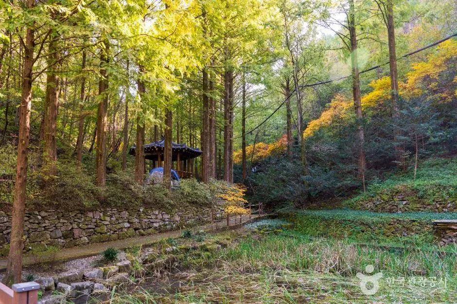
▲ 장태산자연휴양림 숲길. 한국관광공사 DB의 일반 사진으로 촬영 시점은 확인하지 못했다. 사진=한국관광공사
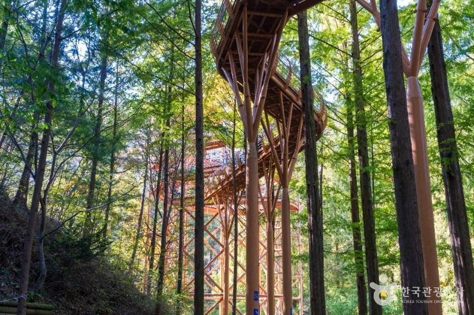
▲ 장태산자연휴양림 숲 속 목조 구조물. 관광공사 DB 사진이며 현재 출입 가능 여부는 확인하지 못했다. 사진=한국관광공사
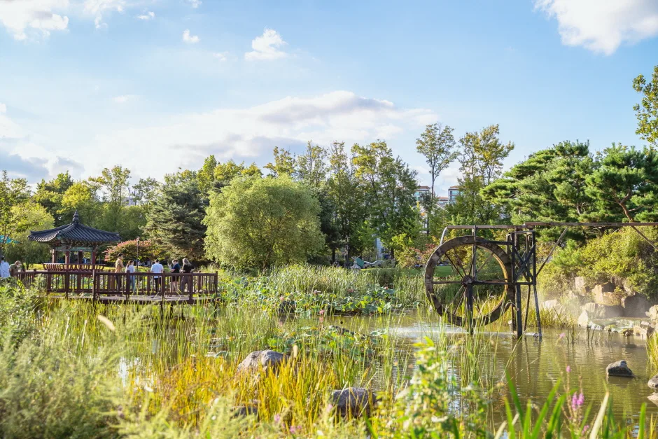
▲ 유림공원 연못과 물레방아. 한국관광공사 DB의 유림공원 사진이다. 사진=한국관광공사
✅ 출발 전 체크리스트
· 제17회 유성국화축제, 10월 17일~11월 1일(16일), 입장 무료
· 내비: 유림공원(어은로 27, 봉명동)
· 올해 임시주차장·셔틀은 공식 발표를 확인하지 못함, 2025년 매체 안내(유성구청·키스티·카이스트·온천동로 노상)는 참고만
· 주말 오후 진입 혼잡 안내, 평일 방문 권장
· 문의 042-611-2678
7. 요약
제17회 유성국화축제는 2026년 10월 17일~11월 1일 대전 유림공원 일원에서 열리며 입장은 무료다. 일정 변경이나 취소는 확인되지 않았다. 올해는 한빛탑 국화 조형물이 새로 들어서고 아스타 화훼원이 유성천까지 넓어지며, 밤에는 달빛 버스킹과 캔들가든 콘서트, 국화 시네마가 예정돼 있다.
자차 방문객은 공원 앞 주차를 기대하기보다 임시주차장을 먼저 확인해야 한다. 지난해에는 유성구청, 키스티·카이스트, 온천동로 노상주차장이 안내됐지만 올해 임시주차장과 셔틀은 공식 발표를 확인하지 못했다. 주차 요금과 수용 대수, 2026년 운영 시간표, 고속도로 나들목별 경로, 연계 코스 간 소요 시간은 확인하지 못했다. 방문 전 유성구청 공지와 문의 전화(042-611-2678)를 확인하자.